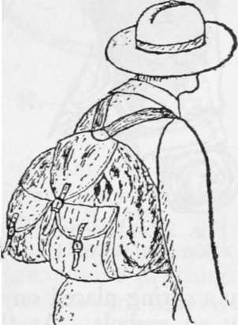
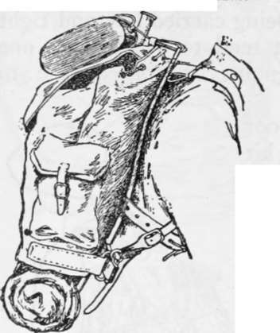
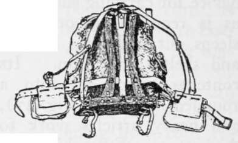
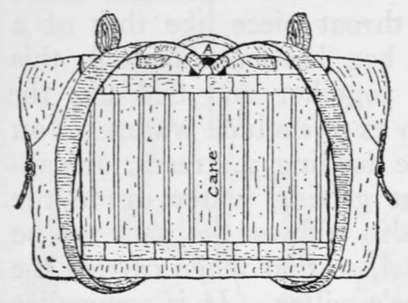
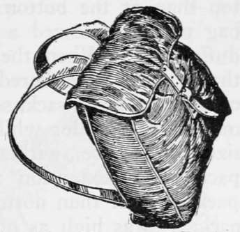

Packs For Pedestrians. Part 3
Description
This section is from the book "Camping And Woodcraft", by Horace Kephart. Also available from Amazon: Camping and Woodcraft.
Packs For Pedestrians. Part 3
Fig. 26. Plain Rucksack (after Payne-Gallwey).
But the rucksack is a poor device for carrying such a kit as is required by one who sleeps out and totes his bed and shelter with him. Its contents bunch up into a rounded lump (see Fig. 27), and heavy articles work to the bottom. Everything gets jumbled up. Worse still, thei pack "rides" so low that it presses hard against the small of the back, which is the worst of all places to put a strain on.
I tried out the rucksack thoroughly, years ago, It is a good contrivance for carrying the day's neces-. sities when you are reasonably sure of reaching a house or camp at night, being never in the way like a haversack or blanket-roll, yet more capacious. The one illustrated in Fig. 25, made of thin brown waterproof canvas, 21 inches wide by 22 inches high, weighs 12 ounces. Another outfitter supplies one of about the same size, in waterproofed olive-drab cloth, with an outside pocket, that weighs only 9 ounces. One of these is an excellent carrier for a ieathep weight Camping kit, but for packs of over 15 pounds, I will have none of it.
Fig. 27. Rucksack in Use.
An interesting modification of the rucksack, which brings the weight where it can best be borne, is the Norwegian army pack sack (Figs. 28, 29). In this the sack is united to a support of oak or ash, which comprises a horizontal wooden crosspiece (A) and two vertical pieces (B, C) curved to fit the back. Bag and frame are joined at the bottom by two rings, which are sewed on leather bands and attached to the horizontal piece of wood, at one end by a spring placed on the traverse, and at the other by an eyebolt. At the top they are joined by a strap, one part of which is sewed on the middle of the back of the knapsack, the other, or free part, being passed through a slit made in the upper part of the support, and bent back and buttoned on itself.
Fig. 28. Norwegian Knapsack in Use.
Fig. 29. Norwegian Knapsack (Back).
The slings of the knapsack draw from the center, as in a rucksack, but are attached to a small arch-shaped brass piece riveted to the upper part of the support. Their free ends have hooks which engage in the eyes of eyebolts fixed at each end of the lower traverse of the frame. On each sling, at the height of the armpit, there is a double button on which is fixed a counter sling furnished with a brass hook which latter is hooked to the belt from the under side, helping to support cartridge pouches. The knapsack is 17^2 inches high, 14^ inches wide, and weighs 3^2 pounds. I have seen lighter ones made for civilians. The lower crosspiece rests above the hips, on the pelvis, which, the designer says, "is the most suitable part of our framework to support burdens." The shoulder straps have little more to do than keep the pack against the back.
Fig. 30. Tourist Knapsack (back).
Fig. 31. Nessmuk Pack Sack.
Another and lighter way of stiffening a knapsack is to reinforce the sides and insert pieces of cane vertically in small pockets on the back (Fig. 30). This also allows air to circulate between the pack and the bearer's back, preventing excessive sweating. (When our old army knapsack was worn, in summer, men would sweat clear through the heavy canvas). The tourist's knapsack here illustrated is pliable and yet has enough rigidity to maintain a neat form. Of course, it is not suitable for carrying a heavy weight. In this case the slings are suspended centrally from a D-ring (A in the ngure). A handle like that of a shawl-strap is provided, so that the knapsack may be carried like a satchel when one is in town. Straps on top are provided to carry the coat or cape.
Pack Sacks
I use this term specifically to denote sacks that are roomy enough to take inside a whole outfit for the pedestrian or canoeist who' camps out. It would be a waste of space to describe half the patterns that are listed by outfitters, as there are so many that are ill-designed. Three examples that have good "points" will suffice:
The so-called "Nessmuk" pack sack (he did not design it) is shown in Fig. 31. It is made of medium-weight brown waterproof canvas. The bag has boxed sides that taper from about 5 inches width at bottom to 3 inches at top (not shown in illustration) and it is about 3 inches narrower at the top than at the bottom. To the top edge of the bag proper is sewed a throat piece like that of a duffel bag. When the bag has been packed, this throat piece is gathered together and tied like the mouth of a grain sack, so as to exclude water. You may take a header while fording a stream, or capsize your canoe, without getting water inside the pack. The extension also allows the sack to be packed fuller than normal, so that when carried the pack rises as high as one's collar. It is somewhat in the way when one is making up his pack, but, when tied, there is no risk of losing anything out of the bag.
This pack sack carries higher, and hence more comfortably, than a rucksack. It will contain a light Camping equipment, say one of twenty pounds. The slings draw from the center, but are somewhat over 2 inches apart at top of pack, and so do not pucker the bag so much, nor throw its top so far backward, as if they drew straight from a D-ring.
The common pattern of "Nessmuk" pack has light web shoulder straps, which are an unmitigated nuisance: they wrinkle up and cut like ropes. Get the better grade with leather straps. I have one of this kind, 20 inches wide by 15 inches high, that weighs 2 pounds 2 ounces. It would be better if the throat piece were a couple of inches longer. The buckle for the flap strap should be placed as high as the upper hole of the strap. There is a similar sack 5 x 16 x 18 inches, with an outside pocket almost the size of the face of the pack, which, with leather slings, weighs only 24 ounces.
Continue to: